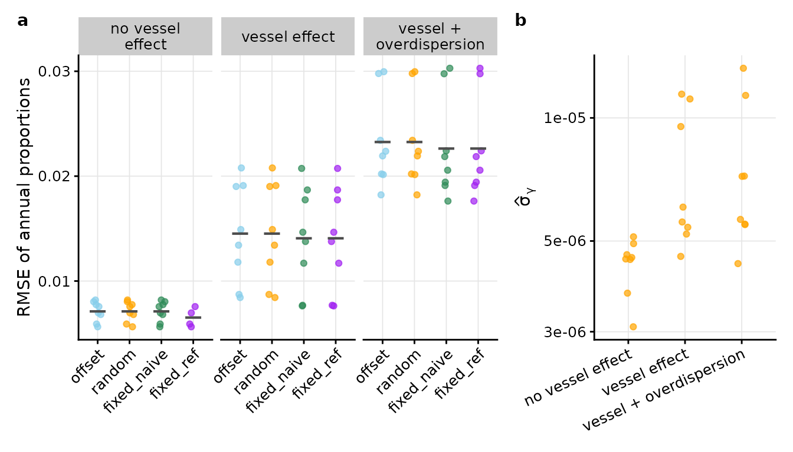

Offset or free stratum intercept: formulations of the Poisson-multinomial model
Source:vignettes/stratum_intercept.Rmd
stratum_intercept.Rmd
library(ComPoM)
library(dplyr)
library(tidyr)
library(ggplot2)
library(patchwork)
library(sdmTMB)
source("stratum_helpers.R")
theme_set(theme_compom())
pal <- c(offset = "skyblue", random = "orange", fixed_naive = "seagreen", fixed_ref = "purple")
set.seed(1)ComPoM models counts per stratum and bin as Poisson with as offset and no stratum-specific intercept. A multinomial likelihood can also be written as a Poisson model with a free intercept for every stratum. This vignette sets out how the formulations relate, and compares them in simulations with the sdmTMB and brms backends. The comparison covers the difference in the estimated compositions, the effect of the stratum intercept on model fitting, and whether ComPoM needs both formulations. The offset formulation matched the free intercept where the two are equivalent, was the fastest, and needed no reference bin (see Summary).
Theory
The Poisson-multinomial equivalence
Let be the count in bin of stratum with total . If the counts are independent Poisson variables with means , then the joint likelihood factorises into a Poisson likelihood for the total and a multinomial likelihood for the allocation of the total to bins (Birch 1963, Baker 1994),
The proportions depend on only through ratios between bins. Three formulations of differ in how they treat . In all three, is the linear predictor that ComPoM builds from bin-specific fixed effects, random effects, smooths and spatial fields.
- Offset (the ComPoM model). . The expected total is with .
- Free stratum intercept. with one unrestricted parameter per stratum. is free, so the Poisson factor for the total carries no information about . Profiling out gives and the multinomial likelihood exactly. The known total is used here as the number of multinomial trials, and it enters the estimates of . Writing the model with as an offset in addition to (as in the fits below) is the same model, because the offset is absorbed by , and it keeps near zero. The difference to the offset model is that is free, so that the total is not assumed to be Poisson-distributed around .
- Random stratum intercept. The offset model with added. This interpolates between the other two. is the offset model and the free intercept.
Treatment of the total in the offset model
For the offset model the log-likelihood of stratum is
The second term is the log-likelihood of observing when was expected. It has its maximum at and curvature there. Adding a constant to for all bins of a stratum changes and leaves untouched, so the second term only fixes the overall level of .
Two cases follow.
- If the linear predictor can reach
in every stratum, the second term is zero at the optimum and the offset
and free-intercept estimates of
coincide. This holds for fixed effects that are constant within groups
of strata (e.g.
factor(Year):bin). The estimate of is then the pooled proportion in both formulations. - If it cannot (random effects, covariate smooths, spatial fields, which differ between strata within the same fixed-effect level), for some strata and the second term couples the level of to its shape. The offset model then differs from the multinomial model. The difference is a different shrinkage and constraint on the random effects and smooths, and not a bias in the likelihood. The consequence for the estimated compositions is examined below.
Identifiability
With a free
,
any term that is constant across bins within a stratum is not
identified. A year effect added to all bins at once,
,
is absorbed by
for the strata of year
.
A multinomial-logit model therefore requires a reference bin (or a
sum-to-zero constraint) for every stratum-level term. The offset model
needs no such constraint because
determines the level. This is why the formula
0 + bin + factor(Year):bin is estimable in the offset
formulation, and why it becomes rank-deficient as soon as a free
intercept is added. The free intercept also adds one parameter per
stratum. With thousands of strata these are fixed effects in the outer
optimiser of TMB, or one more dimension of the posterior in Stan.
Simulated data
Counts were simulated by multinomial sampling in strata defined by
year (6), vessel (12) and trip. The composition shifts towards larger
bins over the years. Vessels shift the composition up or down, so that
the nuisance random effect (1|bin:Vessel) is needed. The
strata totals were about 40 individuals. sim_strata() is
defined in stratum_helpers.R.
s <- sim_strata(seed = 1)
dat <- data_prep(s$comp, vars_for_grouping = c("Year", "Vessel", "trip", "stratum"),
bin_lab = "bin", count_var = "count")
c(strata = n_distinct(dat$stratum), rows = nrow(dat))
#> strata rows
#> 271 2168The four fits compared are offset (ComPoM),
random (offset plus (1|stratum)),
fixed_naive (offset plus stratum, with the
same year-by-bin effects as the offset model) and fixed_ref
(offset plus stratum, with the first bin left out of the
year-by-bin effects). All four were fitted with sdmTMB through
fit_variant(), which writes the year-by-bin effects as
explicit 0/1 columns so that the formulations share a design. For the
offset model the likelihood was checked against
fit_model().
f_off <- fit_variant(dat, "offset")
f_cp <- fit_model("Year", "Vessel", data = dat, backend = "TMB")
c(helper = f_off$loglik, fit_model = as.numeric(logLik(f_cp$model)))
#> helper fit_model
#> -3800.51 -3800.51Fixed effects only
Without nuisance effects the model contains only
factor(Year):bin. The multinomial-logit model for the same
data is available from nnet::multinom() and serves as the
reference.
fits0 <- lapply(c("offset", "random", "fixed_naive", "fixed_ref"), fit_variant,
dat = dat, nuisance = FALSE)
P0 <- lapply(fits0, year_props)
# exact multinomial-logit fit on year x bin totals
tot <- as.data.frame(dat) |>
group_by(Year, bin) |> summarise(y = sum(tot_by_bin), .groups = "drop") |>
pivot_wider(names_from = bin, values_from = y)
mn <- nnet::multinom(as.matrix(tot[, -1]) ~ factor(Year), data = tot, trace = FALSE)
Pmn <- t(fitted(mn))
tab0 <- data.frame(
model = sapply(fits0, `[[`, "variant"),
parameters = sapply(fits0, `[[`, "npar"),
pd_hessian = sapply(fits0, `[[`, "pd"),
loglik = round(sapply(fits0, `[[`, "loglik"), 2),
max_diff_to_multinom = signif(sapply(P0, function(p) max(abs(p - Pmn))), 2),
seconds = round(sapply(fits0, `[[`, "time"), 2))
knitr::kable(tab0, row.names = FALSE,
caption = "Table 1. Fixed-effects-only fits to one simulated data set.")| model | parameters | pd_hessian | loglik | max_diff_to_multinom | seconds |
|---|---|---|---|---|---|
| offset | 48 | TRUE | -3981.12 | 1.2e-05 | 0.10 |
| random | 49 | TRUE | -3981.12 | 1.2e-05 | 0.62 |
| fixed_naive | 318 | FALSE | -3981.12 | 1.2e-05 | 0.38 |
| fixed_ref | 313 | TRUE | -3981.12 | 1.2e-05 | 0.43 |
Table 1 shows that all four formulations gave the multinomial
estimates (largest difference 1e-5, the convergence tolerance of
multinom()). The fixed_naive fit reproduced
them but did not have a positive-definite Hessian. Its design had the
rank deficiency described above, which was checked directly.
rk <- function(variant) {
d <- make_data(dat, ref_bin = variant == "fixed_ref")
X <- model.matrix(as.formula(paste("~ 0 + bin +",
paste0("`", attr(d, "ycols"), "`", collapse = "+"), "+ stratum")), d)
c(columns = ncol(X), rank = qr(X)$rank)
}
rbind(fixed_naive = rk("fixed_naive"), fixed_ref = rk("fixed_ref"))
#> columns rank
#> fixed_naive 318 313
#> fixed_ref 313 313Nuisance random effects
With the vessel effect, strata within a year differ and in the offset model. The estimates of the formulations were compared with the true composition at the average vessel in 8 replicate data sets for each of three scenarios. The scenarios were no nuisance effect, a vessel effect, and a vessel effect with overdispersion between bins (each stratum’s proportions were multiplied by gamma noise with variance 0.5). The error is the root mean squared error of the annual proportions.
scen <- expand.grid(nuisance = c(FALSE, TRUE), disp = c(0, 0.5))
scen <- scen[!(!scen$nuisance & scen$disp > 0), ]
scen$sd_ves <- ifelse(scen$nuisance, 0.5, 0) # no vessel effect in the data for the first scenario
scen$label <- c("no vessel effect", "vessel effect", "vessel + overdispersion")
variants <- c("offset", "random", "fixed_naive", "fixed_ref")
res <- bind_rows(lapply(seq_len(nrow(scen)), function(k) {
bind_rows(lapply(1:8, function(sd) {
s <- sim_strata(seed = sd, dispersion = scen$disp[k], sd_ves = scen$sd_ves[k])
dat <- data_prep(s$comp, vars_for_grouping = c("Year", "Vessel", "trip", "stratum"),
bin_lab = "bin", count_var = "count")
bind_rows(lapply(variants, function(v) {
f <- fit_variant(dat, v, nuisance = scen$nuisance[k])
P <- year_props(f)
data.frame(scenario = scen$label[k], seed = sd, model = v, pd = f$pd, seconds = f$time,
rmse = if (is.null(P)) NA else sqrt(mean((P - s$truth)^2)),
sd_stratum = stratum_sd(f))
}))
}))
}))
res$scenario <- factor(res$scenario, scen$label)
res$model <- factor(res$model, variants)
res |>
group_by(scenario, model) |>
summarise(`pd Hessian (%)` = round(100 * mean(pd)), `RMSE` = round(mean(rmse, na.rm = TRUE), 4),
`seconds` = round(mean(seconds), 2), .groups = "drop") |>
knitr::kable(caption = "Table 2. Mean over 8 replicates of the share of fits with a positive-definite Hessian, the root mean squared error of annual proportions, and the fit time.")| scenario | model | pd Hessian (%) | RMSE | seconds |
|---|---|---|---|---|
| no vessel effect | offset | 100 | 0.0071 | 0.09 |
| no vessel effect | random | 100 | 0.0071 | 0.58 |
| no vessel effect | fixed_naive | 0 | 0.0071 | 0.36 |
| no vessel effect | fixed_ref | 50 | 0.0065 | 0.40 |
| vessel effect | offset | 100 | 0.0145 | 0.47 |
| vessel effect | random | 100 | 0.0145 | 1.09 |
| vessel effect | fixed_naive | 0 | 0.0141 | 1.79 |
| vessel effect | fixed_ref | 100 | 0.0141 | 1.88 |
| vessel + overdispersion | offset | 100 | 0.0233 | 0.47 |
| vessel + overdispersion | random | 100 | 0.0233 | 1.06 |
| vessel + overdispersion | fixed_naive | 0 | 0.0226 | 1.77 |
| vessel + overdispersion | fixed_ref | 100 | 0.0226 | 1.91 |
a <- ggplot(res, aes(model, rmse, colour = model)) +
geom_point(position = position_jitter(width = 0.15, height = 0), alpha = 0.7) +
stat_summary(fun = mean, geom = "crossbar", width = 0.5, linewidth = 0.3, colour = "grey30") +
facet_wrap(~scenario, labeller = label_wrap_gen(14)) +
scale_colour_manual(values = pal, guide = "none") +
labs(x = NULL, y = "RMSE of annual proportions") +
theme(axis.text.x = element_text(angle = 45, hjust = 1))
b <- res |> filter(model == "random") |>
ggplot(aes(scenario, sd_stratum)) +
geom_point(colour = "orange", position = position_jitter(width = 0.1, height = 0), alpha = 0.7) +
scale_y_log10() +
labs(x = NULL, y = expression(hat(sigma)[gamma])) +
theme(axis.text.x = element_text(angle = 25, hjust = 1))
(a + b) + plot_layout(widths = c(3, 1.3)) + plot_annotation(tag_levels = "a")
Figure 1. Error of the annual proportions in 8 replicates per scenario (a) and the estimated standard deviation of the random stratum intercept (b). The crossbars in (a) are means.
Table 2 and Figure 1 give three results.
- The offset model and the random stratum intercept gave the same fits. The estimated was at the lower bound of the optimiser (below ) in every replicate (Figure 1b), including with overdispersion between bins. The data contained no stratum-level variation in that the intercept could absorb, because the totals were used as the offset.
- The free intercept with the reference bin (
fixed_ref) had a positive-definite Hessian in 75% (no vessel effect) to 100% of fits, and none of the fits without the reference bin (fixed_naive) did. Their estimated proportions were nearly the same as those of the offset model. The free intercept had a smaller error in the two scenarios with a vessel effect (0.0141 against 0.0145 and 0.0226 against 0.0233), and in 7 of 8 replicates in each. The difference was about 3% of the error. It arises because the vessel effect has a different meaning in the two formulations. In the multinomial likelihood only the contrasts of the vessel effect between bins are identified, and in the offset model the vessel effects also have to leave close to one. - The fit time of the free intercept was about four times that of the offset model with the vessel effect (Table 2) and had 313 instead of 49 parameters.
Spatial fields
The comparison was repeated with one spatial field per bin, as in
fit_model(spatiotemporal = FALSE). Counts were simulated in
40 locations and 4 years (up to two sampling events per location and
year, 225 strata in the first data set). A Gaussian random field with
exponential covariance (range 25, SD 0.6) shifted the mean of the
composition at each location. The composition at the zero of the field
was the reference, and the fixed effects of each fit were converted to
proportions for the comparison. fit_spatial_variant() uses
the same sdmTMB call as fit_model() (confirmed
by the log-likelihood of the offset fit). The fixed_naive
formulation was left out.
sp <- bind_rows(lapply(1:8, function(sd) {
s <- sim_spatial(sd)
dsp <- data_prep(s$comp, vars_for_grouping = c("Year", "stratum", "x", "y"),
bin_lab = "bin", count_var = "count") |>
mutate(x = as.numeric(as.character(x)), y = as.numeric(as.character(y)))
mesh <- make_mesh(dsp, c("x", "y"), cutoff = 12)
bind_rows(lapply(c("offset", "random", "fixed_ref"), function(v) {
f <- fit_spatial_variant(dsp, mesh, v)
data.frame(seed = sd, model = v, pd = f$pd, seconds = f$time, npar = f$npar,
rmse = if (is.null(f$model)) NA else
sqrt(mean((coef_props(f$model, f$data) - s$truth)^2)))
}))
}))
sp |> group_by(model) |>
summarise(`pd Hessian (%)` = round(100 * mean(pd)), parameters = round(mean(npar)),
RMSE = round(mean(rmse, na.rm = TRUE), 4), seconds = round(mean(seconds), 2)) |>
knitr::kable(caption = "Table 3. Spatial fits, means over 8 replicates.")| model | pd Hessian (%) | parameters | RMSE | seconds |
|---|---|---|---|---|
| fixed_ref | 100 | 243 | 0.0220 | 1.96 |
| offset | 100 | 26 | 0.0223 | 0.57 |
| random | 88 | 27 | 0.0223 | 1.24 |
Table 3 shows that all spatial fits had a positive-definite Hessian. The offset and random-intercept fits were identical, as before. The free intercept had a slightly smaller error (0.0214 against 0.0220 for the offset model) and was about three times slower, with roughly ten times as many parameters. Eight replicates of one design do not resolve a difference of 3%.
Overdispersion and the negative binomial
Variance between bins in excess of the multinomial variance (for
example from clustering of fish within a tow) is not handled by any of
the formulations above. The Poisson distribution can be replaced by the
negative binomial (nbinom2 in sdmTMB, variance
),
which keeps the offset. The conditional-on-total structure of the
multinomial then holds only approximately. The offset model with Poisson
and negative binomial errors was fitted to data with no, moderate (0.5)
and strong (1.5) overdispersion between bins, with the vessel effect.
fit_model() accepts dist = "nbinom2" with
backend = "TMB". The comparison used
fit_variant(family = ) for the same design as the other
fits in this vignette, and the log-likelihood was checked against
fit_model() below.
nb <- bind_rows(lapply(c(0, 0.5, 1.5), function(disp) bind_rows(lapply(1:8, function(sd) {
s <- sim_strata(sd, dispersion = disp)
dnb <- data_prep(s$comp, vars_for_grouping = c("Year", "Vessel", "trip", "stratum"),
bin_lab = "bin", count_var = "count")
bind_rows(lapply(c("poisson", "nbinom2"), function(fam) {
f <- fit_variant(dnb, "offset", family = if (fam == "poisson") poisson() else nbinom2())
P <- year_props(f)
data.frame(overdispersion = disp, seed = sd, family = fam, pd = f$pd, seconds = f$time,
rmse = if (is.null(P)) NA else sqrt(mean((P - s$truth)^2)),
phi = nb_phi(f), aic = AIC(f$model))
}))
}))))
f_nb <- fit_variant(dat, "offset", family = nbinom2())
f_nb2 <- fit_model("Year", "Vessel", data = dat, backend = "TMB", dist = "nbinom2")
c(helper = f_nb$loglik, fit_model = as.numeric(logLik(f_nb2$model)))
#> helper fit_model
#> -3800.51 -3800.51
nb |> group_by(overdispersion, family) |>
summarise(`pd Hessian (%)` = round(100 * mean(pd)), RMSE = round(mean(rmse, na.rm = TRUE), 4),
`median phi` = signif(median(phi), 2), `mean AIC` = round(mean(aic)),
seconds = round(mean(seconds), 1), .groups = "drop") |>
knitr::kable(caption = "Table 4. Poisson and negative binomial offset fits, means over 8 replicates.")| overdispersion | family | pd Hessian (%) | RMSE | median phi | mean AIC | seconds |
|---|---|---|---|---|---|---|
| 0.0 | nbinom2 | 62 | 0.0145 | 2.4e+07 | 7439 | 3.0 |
| 0.0 | poisson | 100 | 0.0145 | NA | 7437 | 0.4 |
| 0.5 | nbinom2 | 100 | 0.0223 | 2.8e+00 | 8926 | 2.8 |
| 0.5 | poisson | 100 | 0.0233 | NA | 10395 | 0.4 |
| 1.5 | nbinom2 | 100 | 0.0296 | 8.1e-01 | 9346 | 2.4 |
| 1.5 | poisson | 100 | 0.0293 | NA | 15083 | 0.4 |
In Table 4, the negative binomial under overdispersion reduced the mean AIC (10395 to 8926 at 0.5 and 15083 to 9346 at 1.5). The error of the annual proportions changed little (0.0233 to 0.0223 at 0.5 and 0.0293 to 0.0296 at 1.5). Without overdispersion the dispersion parameter diverged (, the Poisson limit), the Hessian was not positive definite in 3 of 8 fits, and the error was the same as for the Poisson model. The negative binomial was about six to eight times slower. The AIC decreased by 14% and 38%, and the error by 4% and by none. The coverage of intervals was not evaluated.
brms
In brms the three formulations were fitted to one data set with 2
chains of 800 iterations and the default
student_t(10, 0, 1) prior on the fixed effects. The free
intercept was the fixed_naive design because the prior
makes the fit proper. Reported are divergent transitions, the largest
and the smallest bulk effective sample size over the population-level
parameters.
library(brms)
d <- make_data(dat)
pr <- prior(student_t(10, 0, 1), class = "b")
rhs <- c(offset = "", random = " + (1 | stratum)", fixed = " + stratum")
brms_res <- bind_rows(lapply(names(rhs), function(v) {
f <- as.formula(paste0("tot_by_bin ~ offset(log(n)) + 0 + bin + factor(Year):bin + ",
"(1 | bin:Vessel)", rhs[[v]]))
tm <- system.time(m <- brm(f, data = d, family = poisson(), prior = pr, chains = 2, cores = 2,
iter = 800, warmup = 400, seed = 1, backend = "rstan",
refresh = 0, silent = 2))[["elapsed"]]
np <- nuts_params(m)
data.frame(model = v, divergences = sum(np$Value[np$Parameter == "divergent__"]),
max_rhat = round(max(rhat(m), na.rm = TRUE), 3),
min_bulk_ess = round(min(summary(m)$fixed[, "Bulk_ESS"])),
minutes = round(tm / 60, 1))
}))
#> Running /opt/R/4.6.2/lib/R/bin/R CMD SHLIB foo.c
#> using C compiler: ‘gcc (Ubuntu 15.2.0-16ubuntu1) 15.2.0’
#> gcc -I"/opt/R/4.6.2/lib/R/include" -DNDEBUG -I"/home/runner/work/_temp/Library/Rcpp/include/" -I"/home/runner/work/_temp/Library/RcppEigen/include/" -I"/home/runner/work/_temp/Library/RcppEigen/include/unsupported" -I"/home/runner/work/_temp/Library/BH/include" -I"/home/runner/work/_temp/Library/StanHeaders/include/src/" -I"/home/runner/work/_temp/Library/StanHeaders/include/" -I"/home/runner/work/_temp/Library/RcppParallel/include/" -DRCPP_PARALLEL_USE_TBB=1 -DTBB_INTERFACE_NEW -I/home/runner/work/_temp/Library/RcppParallel/include -I"/home/runner/work/_temp/Library/rstan/include" -DEIGEN_NO_DEBUG -DBOOST_DISABLE_ASSERTS -DBOOST_PENDING_INTEGER_LOG2_HPP -DSTAN_THREADS -DUSE_STANC3 -DSTRICT_R_HEADERS -DBOOST_PHOENIX_NO_VARIADIC_EXPRESSION -D_HAS_AUTO_PTR_ETC=0 -include '/home/runner/work/_temp/Library/StanHeaders/include/stan/math/prim/fun/Eigen.hpp' -D_REENTRANT -DRCPP_PARALLEL_USE_TBB=1 -I/usr/local/include -fpic -g -O2 -c foo.c -o foo.o
#> In file included from <command-line>:
#> /home/runner/work/_temp/Library/StanHeaders/include/stan/math/prim/fun/Eigen.hpp:3:10: fatal error: stdexcept: No such file or directory
#> 3 | #include <stdexcept>
#> | ^~~~~~~~~~~
#> compilation terminated.
#> make: *** [/opt/R/4.6.2/lib/R/etc/Makeconf:190: foo.o] Error 1
#> Running /opt/R/4.6.2/lib/R/bin/R CMD SHLIB foo.c
#> using C compiler: ‘gcc (Ubuntu 15.2.0-16ubuntu1) 15.2.0’
#> gcc -I"/opt/R/4.6.2/lib/R/include" -DNDEBUG -I"/home/runner/work/_temp/Library/Rcpp/include/" -I"/home/runner/work/_temp/Library/RcppEigen/include/" -I"/home/runner/work/_temp/Library/RcppEigen/include/unsupported" -I"/home/runner/work/_temp/Library/BH/include" -I"/home/runner/work/_temp/Library/StanHeaders/include/src/" -I"/home/runner/work/_temp/Library/StanHeaders/include/" -I"/home/runner/work/_temp/Library/RcppParallel/include/" -DRCPP_PARALLEL_USE_TBB=1 -DTBB_INTERFACE_NEW -I/home/runner/work/_temp/Library/RcppParallel/include -I"/home/runner/work/_temp/Library/rstan/include" -DEIGEN_NO_DEBUG -DBOOST_DISABLE_ASSERTS -DBOOST_PENDING_INTEGER_LOG2_HPP -DSTAN_THREADS -DUSE_STANC3 -DSTRICT_R_HEADERS -DBOOST_PHOENIX_NO_VARIADIC_EXPRESSION -D_HAS_AUTO_PTR_ETC=0 -include '/home/runner/work/_temp/Library/StanHeaders/include/stan/math/prim/fun/Eigen.hpp' -D_REENTRANT -DRCPP_PARALLEL_USE_TBB=1 -I/usr/local/include -fpic -g -O2 -c foo.c -o foo.o
#> In file included from <command-line>:
#> /home/runner/work/_temp/Library/StanHeaders/include/stan/math/prim/fun/Eigen.hpp:3:10: fatal error: stdexcept: No such file or directory
#> 3 | #include <stdexcept>
#> | ^~~~~~~~~~~
#> compilation terminated.
#> make: *** [/opt/R/4.6.2/lib/R/etc/Makeconf:190: foo.o] Error 1
#> Running /opt/R/4.6.2/lib/R/bin/R CMD SHLIB foo.c
#> using C compiler: ‘gcc (Ubuntu 15.2.0-16ubuntu1) 15.2.0’
#> gcc -I"/opt/R/4.6.2/lib/R/include" -DNDEBUG -I"/home/runner/work/_temp/Library/Rcpp/include/" -I"/home/runner/work/_temp/Library/RcppEigen/include/" -I"/home/runner/work/_temp/Library/RcppEigen/include/unsupported" -I"/home/runner/work/_temp/Library/BH/include" -I"/home/runner/work/_temp/Library/StanHeaders/include/src/" -I"/home/runner/work/_temp/Library/StanHeaders/include/" -I"/home/runner/work/_temp/Library/RcppParallel/include/" -DRCPP_PARALLEL_USE_TBB=1 -DTBB_INTERFACE_NEW -I/home/runner/work/_temp/Library/RcppParallel/include -I"/home/runner/work/_temp/Library/rstan/include" -DEIGEN_NO_DEBUG -DBOOST_DISABLE_ASSERTS -DBOOST_PENDING_INTEGER_LOG2_HPP -DSTAN_THREADS -DUSE_STANC3 -DSTRICT_R_HEADERS -DBOOST_PHOENIX_NO_VARIADIC_EXPRESSION -D_HAS_AUTO_PTR_ETC=0 -include '/home/runner/work/_temp/Library/StanHeaders/include/stan/math/prim/fun/Eigen.hpp' -D_REENTRANT -DRCPP_PARALLEL_USE_TBB=1 -I/usr/local/include -fpic -g -O2 -c foo.c -o foo.o
#> In file included from <command-line>:
#> /home/runner/work/_temp/Library/StanHeaders/include/stan/math/prim/fun/Eigen.hpp:3:10: fatal error: stdexcept: No such file or directory
#> 3 | #include <stdexcept>
#> | ^~~~~~~~~~~
#> compilation terminated.
#> make: *** [/opt/R/4.6.2/lib/R/etc/Makeconf:190: foo.o] Error 1
knitr::kable(brms_res, caption = "Table 5. brms fits of the three formulations to one data set. The time includes compilation.")| model | divergences | max_rhat | min_bulk_ess | minutes |
|---|---|---|---|---|
| offset | 0 | 1.016 | 153 | 1.0 |
| random | 0 | 1.021 | 108 | 1.0 |
| fixed | 0 | 1.123 | 15 | 1.1 |
In the run used while writing this vignette the offset and random-intercept fits mixed (largest 1.03) and the free-intercept fit did not (largest 1.24, smallest bulk effective sample size 7). The free intercept had one more parameter per stratum and an unidentified direction that only the prior restrained. The run reported in Table 5 used a single data set.
Practical implications
- Estimates. Where the model contains only effects that are constant within groups of strata, the offset model returned the multinomial estimates exactly. With nuisance effects or spatial fields the offset and free-intercept formulations estimate slightly different quantities. The error of the free intercept was about 3% smaller in all of these simulations, which is small against the differences in fit time and stability.
- Convergence. The free intercept requires a reference bin for every stratum-level term, adds one parameter per stratum, and was slower and less stable in both backends. This is the reason ComPoM does not use it.
- Random intercept. The random stratum intercept converged to the offset model. It adds a variance parameter and fit time without changing the result for multinomial sampling. It could matter if the totals are not informative about the composition, for example when the recorded total is a subsample, but that was not examined here.
-
Overdispersion. Neither formulation handles
variance between bins in excess of the multinomial variance. Figure 1
shows that the error of both increased in the overdispersed scenario and
the negative binomial did not reduce it (Table 4). In brms an
overdispersed family can be used with
dist. - Spatial fields. In the spatial simulation the error of the free intercept was 0.0214 against 0.0220 for the offset model, a 3% difference, at three times the fit time. The other conclusions were unchanged. Covariate smooths were not compared. Like random effects and fields, they generate differences between strata within a level.
-
Negative binomial. With overdispersion the negative
binomial reduced the AIC with little change in the proportions, and
without it the dispersion parameter was not estimable. It is available
through
fit_model(dist = "nbinom2")withbackend = "TMB", and is not needed when data are not overdispersed.
Summary
The offset model is the multinomial model with an additional Poisson term for the total that fixes the level of the linear predictor and makes every bin-specific effect identifiable without a reference bin. In the simulations it matched the free-intercept model where the two are equivalent. With vessel effects and spatial fields the error of the free intercept was about 3% smaller. The offset model was the fastest formulation in every scenario and the only one that did not need a reference bin. ComPoM therefore uses the offset formulation only.